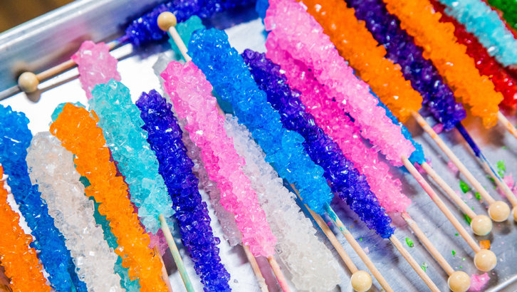
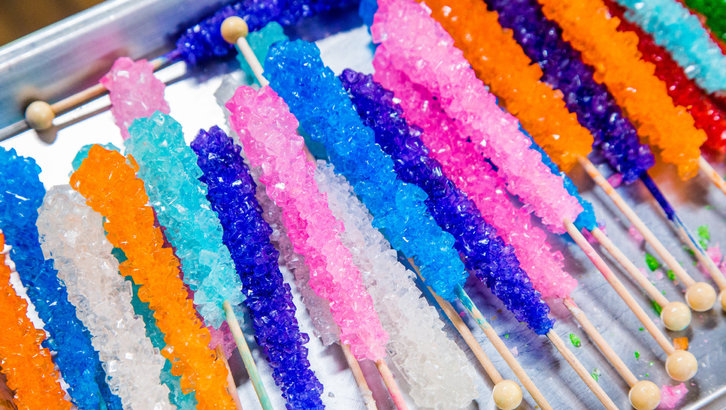

What is Candy?
Candy, also called sweets or lollies, is a confection that features sugar as a principal ingredient. The category, called sugar confectionery, encompasses any sweet confection, including chocolate, chewing gum, and sugar candy. Vegetables, fruit, or nuts which have been glazed and coated with sugar are said to be candied.
Physically, candy is characterized by the use of a significant amount of sugar or sugar substitutes. Unlike a cake or loaf of bread that would be shared among many people, candies are usually made in smaller pieces. However, the definition of candy also depends upon how people treat the food. Unlike sweet pastries served for a dessert course at the end of a meal, candies are normally eaten casually, often with the fingers, as a snack between meals. Each culture has its own ideas of what constitutes candy rather than dessert. The same food may be a candy in one culture and a dessert in another.
History:
Between the 6th and 4th centuries BCE, the Persians, followed by the Greeks, discovered the people in India and their "reeds that produce honey without bees". They adopted and then spread sugar and sugarcane agriculture. Sugarcane is indigenous to tropical South and Southeast Asia, while the word sugar is derived from the Sanskrit word Sharkara. Pieces of sugar were produced by boiling sugarcane juice in ancient India and consumed as Khanda, dubbed as the original candy and the etymology of the word.
Before sugar was readily available, candy was based on honey. Honey was used in Ancient China, Middle East, Egypt, Greece and the Roman Empire to coat fruits and flowers to preserve them or to create forms of candy. Candy is still served in this form today, though now it is more typically seen as a type of garnish.
Before the Industrial Revolution, candy was often considered a form of medicine, either used to calm the digestive system or cool a sore throat. In the Middle Ages candy appeared on the tables of only the most wealthy at first. At that time, it began as a combination of spices and sugar that was used as an aid to digestive problems. Digestive problems were very common during this time due to the constant consumption of food that was neither fresh nor well balanced. Banquet hosts would typically serve these types of 'candies' at banquets for their guests. One of these candies, sometimes called chamber spice, was made with cloves, ginger, aniseed, juniper berries, almonds and pine kernels dipped in melted sugar.
The Middle English word candy began to be used in the late 13th century.
The first candy came to America in the early 18th century from Britain and France. Only a few of the early colonists were proficient in sugar work and were able to provide the sugary treats for the very wealthy. Rock candy, made from crystallized sugar, was the simplest form of candy, but even this basic form of sugar was considered a luxury and was only attainable by the rich.
The candy business underwent a drastic change in the 1830s when technological advances and the availability of sugar opened up the market. The new market was not only for the enjoyment of the rich but also for the pleasure of the working class. There was also an increasing market for children. While some fine confectioners remained, the candy store became a staple of the child of the American working class. Penny candies epitomized this transformation of candy. Penny candy became the first material good that children spent their own money on. For this reason, candy store-owners relied almost entirely on the business of children to keep them running. Even penny candies were directly descended from medicated lozenges that held bitter medicine in a hard sugar coating.
In 1847, the invention of the candy press (also known as a toy machine) made it possible to produce multiple shapes and sizes of candy at once. In 1851, confectioners began to use a revolving steam pan to assist in boiling sugar. This transformation meant that the candy maker was no longer required to continuously stir the boiling sugar. The heat from the surface of the pan was also much more evenly distributed and made it less likely the sugar would burn. These innovations made it possible for only one or two people to successfully run a candy business.
(Source)
Please Note that Ban Ban's Candy Emporium is not a real establishment it was just made up for my CS2 class project!

 
